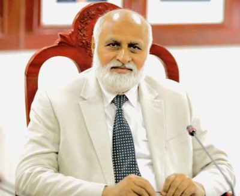
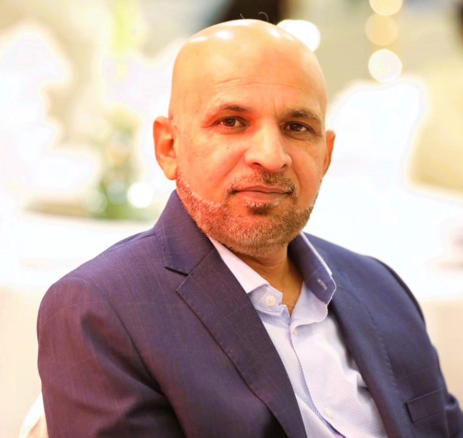
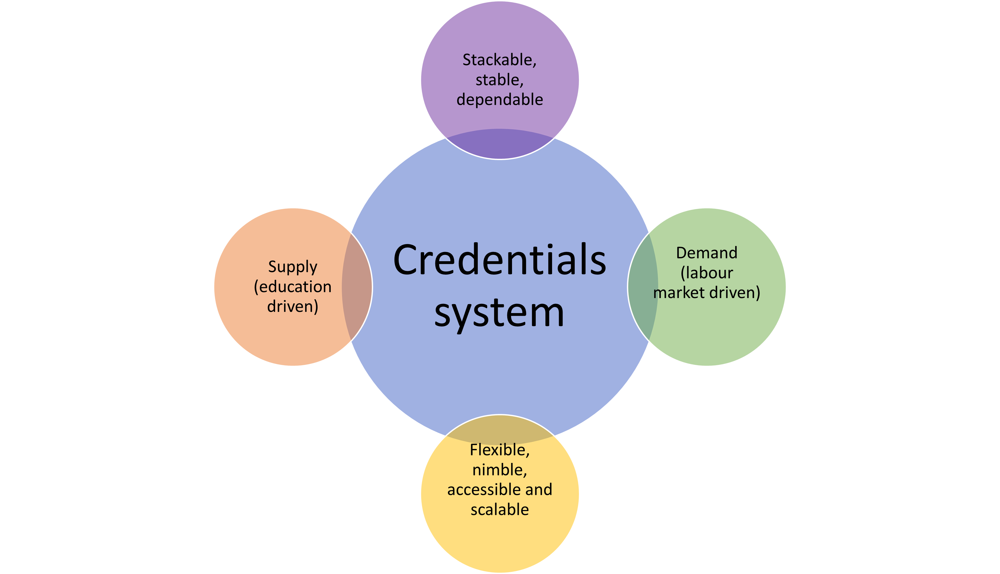

Micro-credentials are helping to bridge skill gap emerging due to fast penetration of technological and digital technologies in the labor market.The main purposes of micro-credentials are employability, upskilling and reskilling, lifelong learning, adult education and inclusiveness cedefop. It is estimated that the online learning market will be around \(\$500\) million by 2025. Covid-19 pandemic has opened our eyes to the amazing potential of digital learning to build skills, flexibly and remotely.1
Pakistan has huge youth bulge and is suffering badly from low-skill traps. As a result it has stagnant or declining productivity in many sectors of the economy. Pakistan has credential inflation but lacks in skills-credentials. Pakistan has not enough resources to train its burgeoning youth for market oriented skills through business as usual approach - by granting degrees. Moreover, due to increasing life expectancy over time in the last two centuries, work span has increased and skills obtained at age 20-22 by having a college degree become obsolete for a work life of 40 to 55 years. If no remedial measures are taken, there is a huge cost of inaction for employees, employers and the national economy.
How can one facilitate working learners, job seekers, part-time learners, workers who are in need of upskilling/reskilling among many others? How can learning be scaled and made accessible to all? This is possible with use of technology, flexible online and hybrid learning , and using AI and other tools. Short soft skill based courses are a way forward.
What are micro-crendetials?

Small learning experiences, such as short courses leading to micro-credentials, allow for a targeted acquisition of skills and competences adapted to a fast-changing society and labor market while not replacing traditional qualifications. Their objective is to be complementary. Secondly, this learning experience is inclusive, flexible and affordable.2 The Ministry of Information Technology has already launched a set of courses which are helping many and generating earning opportunities both at national and global level. But most of these courses are narrow in domain. Micro-credentials is an emerging area and offer many benefits such as short lead-in times to certification, flexibility in learning, and skill provision in new and expanding areas.3
So far, there is no national approach which demands higher education institutions for developing micro-credentials programs which ensure quality, relevance and some minimum standards so that these micro-credentials are acceptable in other parts of the world as well.

Objectives of the center
The goal is to provide on-time quality credentials responsive to changing market realities.
Objectives of this initiative are:
imparting quality skill-centric flexible, accessible, scalable and affordable competency based education measuring skill and knowledge not time.
breaking learning into small chunks
complementary to existing credentials not a substitute and
developing a dialogue for having a national approach for well-thought micro-credentials initiatives at the national level.
Micro-credentials center role
Micro-credentials represent distinct knowledge and skills and demonstrate a level of pathway achievement to employers, co-workers and one’s professional network. Micro-credentials offer several benefits to both individuals and organizations. Micro-credential are popular because they are - flexible and convenient, targeted and specific, cost-effective and relevant to the workplace.
This center will not only facilitate Quaid-i-Azam University and will seek some financial and technical support from relevant government and private organizations but will also provide a platform for development of a national strategy on development of skill-centric workforce which meets the needs of the society and meet some international standards.
The potential of micro-credentials Micro-credentials may be the solution that takes student-centered learning to the next level. Micro-credentials are digital certifications that verify an individual’s accomplishment in a specific skill or set of skills. Four attributes characterize micro-credentials.
Competency-based: To earn a micro-credential, an educator must submit evidence—such as a classroom video, student surveys, or lesson plan—to demonstrate their competence in a skill.
Personalized: Individuals or schools can choose the stack of micro-credentials to earn based on each educator’s individual needs and professional goals.
On-demand: Educators can start and finish a micro-credential whenever they want.
Shareable: Educators can share their micro-credentials on resumes and as a way to earn professional endorsements.4
Micro-credential: formal and informal
This falls in the category of informal education in most of the cases. Nevertheless, now some leading universities of the world have started counting these credentials towards formal credit. Once the learner demonstrates learning outcomes, credit is guaranted for that qualification. This is very useful for those who cant afford or upskill by having formal admission in the university due to several reasons.
Business Model
Many such initiatives often become a burden on institutions by having some regular staff recruited to run daily affairs. There are hardly incentives for making such initiatives financially viable. There is need that all such centers should be strictly run through a neat and clean business model where incentives are linked to performance. If center(s) is not generating any revenue, no staff will be paid and director(s) will not be given any priviliges. Business model should be flexible and open for discussion and dialogue, and free of all bottlenecks created from routine university administration with complete financial autonomy at least during its inception. There should be only task-based staff for such center. Further details will be shared with relevant authorities.
Once it gets established and clear TORs for everyone working including Director are developed through experiential learning, checks and balances should be in place. Director performance should be monitored strictly in accordance with TORs and incentives should be directly linked to fulfilment of TORs. There should be separate board consisting of eminent market oriented professionals, leading experts from industry and other fields which should meet at least once in a quarter under the Chair , the Vice Chancellor. This board proceedings should be directly placed in the Syndiate. Experiential learning over time will help to develop a course(s) of action of considering some of these credentials for credit for regular degree. Director should file PC-1 or seek some other seed money in liaison with other national/international organizations.
Way-forward
According to Times higher education depending on the course there are a few different ways to study a micro-credential. Most courses will be taught online and will be broken down into a series of modules. Students can then complete tasks at their own pace. Some courses will be taught through online and recorded lecture approach, and in case of high in demand courses via a hybrid approach of in-person and online material. The subject matter and assessment style will influence the type of approach offered to students.

Main focus will be to adapt standard well established micro-credential currency and coherence as per local and national requirements. National standards will be developed over time, in consultatioin with the board, to keep credentials consistent with the rest of the world. Higher education will be made on board to facilitate this national human capital initiative on micro-credentials. Currently, there is half-hearted attempt at the higher education level to follow international best practices whicu usually don’t work due to lack of capacity at lower tiers. Designing a best policy is possible with a group of experts but it cant be materialized unless capacity to execute the policy is available at each relevant tier, therefore, there is need to adapt this initiative as per our local needs.
It is important to note that a micro-credential cannot be taken instead of a university degree. They are instead used to supplement and develop knowledge and skills already gained. Courses will preferably be designed by a group of experts and will be delivered in national language and local case studies will be highly desirable where applicable. One of the benefit of micro-credentials will be that it has no boundaries and resource persons available in any part of the globe maybe requested to provide services. Secondly, there can be diversity in course offerings and many allied courses maybe offered even if degree related to those courses are not offered.
Certain areas will be short-listed to start with and some prominent scholars/resource persons will be requested and no compromise on quality of the course will be made.
Dedicated website (under-construction)
https://qau.edu.pk/micro-credentials
Some examples of micro-credentials
Certificate in Physics/Chemistry/Biology/Mathematics Teaching
Business Management
Data Science
Cloud computing
Data Analytics
Python , R, SQL
Educational leadership
Inclusive learning
Biostatistics
Research Methods: QnQ
Mentoring and coaching
Gender equality
Tools for climate change
Footnotes
Digital learning can help us close the global education gap. This is how.↩︎
A EUROPEAN APPROACH TO MICRO-CREDENTIALS https://education.ec.europa.eu/sites/default/files/2022-01/micro-credentials%20brochure%20updated.pdf↩︎
New research reveals awareness building and pilot programmes are vital steps for micro-credential success[https://www.skillnetireland.ie/new-research-reveals-awareness-building-pilot-programmes-vital-micro-credential-success/] (https://www.skillnetireland.ie/new-research-reveals-awareness-building-pilot-programmes-vital-micro-credential-success/)↩︎
Tracy Crow, “Micro-credentials for Impact: Holding Professional Learning to High Standards,” Learning Forward and Digital Promise, 2017, https:// learningforward.org/wp-content/uploads/2017/08/micro-credentials-for-impact.pdf.↩︎